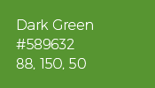
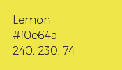

<!doctype html>
<html lang="en" class="has-navbar-fixed-top">
    <head>
        <meta charset="utf-8" />

        <link
            rel="apple-touch-icon"
            sizes="180x180"
            href="https://qgis.org/img/favicon/apple-touch-icon.png"
        />
        <link
            rel="icon"
            type="image/png"
            sizes="32x32"
            href="https://qgis.org/img/favicon/favicon-32x32.png"
        />
        <link
            rel="icon"
            type="image/png"
            sizes="16x16"
            href="https://qgis.org/img/favicon/favicon-16x16.png"
        />
        <link rel="manifest" href="https://qgis.org/site.webmanifest" />

        <meta name="viewport" content="width=device-width, initial-scale=1.0" />
        <title>Visual Style Guide &middot; QGIS　WEBサイト</title>

        <meta
            name="description"
            content="
                
            
            "
        />

        <meta name="generator" content="Hugo 0.107.0">
        <meta name="twitter:card" content="summary" />
        
        <meta
            name="twitter:title"
            content="Visual Style Guide &middot; QGIS　WEBサイト"
        />
        <meta
            name="twitter:description"
            content="
                
            
            "
        />

        <meta property="og:type" content="article" />
        <meta
            property="og:title"
            content="Visual Style Guide &middot; QGIS　WEBサイト"
        />
        <meta
            property="og:description"
            content="
                
            
            "
        />
        <meta property="og:image" content="https://qgis.org/img/QGIScover.png"/>

        
        
        
        
        <link href="/bulma.min.0c62cd6e584563ff66b38b435964e346a416232a95829fdf73fdaff9a472f168.css" rel="stylesheet" />

        
        
        
        
        
        
        
        
        
        
        
        <link href="/css/all.min.327d9cdc1e6d7b43e2ff21ed029d014975ea0c5ae8e1cbbf2d90acc3ad70c2bf.css" rel="stylesheet" />

        
        
        
        <link href="/bulma.min.c826033ae3d407a503bd9f4367f654c3bc6443d1d105dfc1d41418e6c54acec6.css" rel="stylesheet" />

        
        
        
        <link href="/css/fontawesome.min.545b0e3058fd53ad9d527b38b157fa25161c8595dc70084b2b40156bca2b3f9c.css" rel="stylesheet" />

        
        
        
        
        
        
        
        
        


        <link
            rel="alternate"
            type="application/rss+xml"
            title="QGIS　WEBサイト"
            href="https://qgis.org/index.xml"
        />

        
        
        <script defer src="/js/qrcodegen-v1.8.0-es6.min.19d8d054ea10e2a90debef4f02326129d80711c50758fb0958bee2369e02e367.js"></script>
        <script>
            var matomoURL = "//matomo.qgis.org/"
            var matomoSiteId = "7"
        </script>

        
        
        
        
        
        
        
        
        
        
           
        <script defer src="/js/all.min.df9b9e12cc9f519f6d7dfdeb7aa7d4da9fc7b0c8408186d0fd39259aab8dfb9a.js"></script> 
        
        
        <script defer src="/search.min.6ef3f670e3df29a0d7105576d06c1001a5e58244d2a22d3fd2bf517951b9ee2d.js"></script>
        <script
            crossorigin=""
            type="application/javascript"
            src="https://yoichigmf.github.io/qgis-uni-navigation/index.js"
        ></script>
    </head>

    <body></body>
</html>


<qg-top-nav
    breakpoint="1024"
    class="is-highest navbar is-fixed-top"
    location-prefix=""
></qg-top-nav>


<div class="box mb-0 context-container" id="context">
    <div class="container is-flex is-justify-content-space-between">
        <div class="rss-feed">
            
            
            
            
                
                
                    
                    <a href="https://uc2024.qgis.sk/" target="_blank" rel="noopener" class="external-link">
                        Join the QGIS User Conference 2024
                    </a>    
                    
                
            
            
        </div>    
        <div id="search-control" class="control has-icons-right search-control">
            <form action="https://qgis.org/search/" method="GET">
                <input class="input is-small" type="search" id="search-query" name="q" placeholder="Search">
                <span class="icon is-right">
                    <i class="fa-solid fa-magnifying-glass"></i>
                </span>
            </form>
        </div>
    </div>
</div>


<section class="section ">
    <div class="container content narrow">
        
        
        


<h1 id="visual-style-guide">
    Visual Style Guide
    <a class="heading-anchor" href="#visual-style-guide">
	    ¶
    </a>
</h1>
<h2 id="version-10">
    Version 1.0
    <a class="heading-anchor" href="#version-10">
	    ¶
    </a>
</h2>
<p>This is our QGIS Visual Style Guide. This document defines standards for the use of the our visual identity. It proposes a modernization of the QGIS brand to make it stronger, more visible and more adaptable to a broad range of use cases.</p>
<p>The Visual Style Guide is a living document, initiated with the goal of developing a consistent message and image for QGIS. It is a &ldquo;living&rdquo; document because we expect it to expand as we cover more use cases where visual consistency is important and can be described using simpler rules. The standards and simple policies described here are designed to maintain the uniformity of presentation necessary for successful promotion and marketing efforts for the QGIS project.</p>
<p>Our visual identity symbolizes QGIS&rsquo;s strength, promise of quality and competence. Proper treatment of logo, fonts and color ensures that QGIS will be recognized and stand out amid communications clutter. Graphic standards are a visual expression of QGIS and should serve as the base for our overall communications strategy.</p>
<p>This first version of the Graphic Style Guide outlines the core elements of the new QGIS logo. Future versions will focus on branding assets and how to spread the QGIS brand across the web, mobile devices and printed materials.</p>
<h2 id="logotype">
    Logotype
    <a class="heading-anchor" href="#logotype">
	    ¶
    </a>
</h2>
<h3 id="original">
    Original
    <a class="heading-anchor" href="#original">
	    ¶
    </a>
</h3>
<p> </p>
<p><strong>Download logo file</strong></p>
<p><a
    href="visual/qgis-logo.svg"
    
    
><code>SVG logo</code></a></p>
<p><a
    href="visual/qgis-logo.png"
    
    
><code>PNG logo</code></a></p>
<p><a
    href="visual/qgis-logo-monochrome.svg"
    
    
><code>SVG monochrome logo</code></a></p>
<p><a
    href="visual/qgis-logo-monochrome.png"
    
    
><code>PNG monochrome logo</code></a></p>
<p>The new QGIS logo is presented here. Keeping the core elements of the original QGIS logo (Q letter with an arrow through it), this new version intends to be sharp and scalable, introducing simpler and bolder shapes.</p>
<p>The proposed changes are listed below.</p>
<ul>
<li>
<p>The existing spirit is preserved but the logo is bold</p>
</li>
<li>
<p>Shadows removed</p>
</li>
<li>
<p>The Q is sans-serif</p>
</li>
<li>
<p>The arrow becomes the part of Q letter</p>
</li>
<li>
<p>The QGIS logo text is based on the free &amp; libre Trueno Bold font.</p>
</li>
</ul>
<h3 id="minimal">
    Minimal
    <a class="heading-anchor" href="#minimal">
	    ¶
    </a>
</h3>
<p></p>
<p><strong>Download minimal logo</strong></p>
<p><a
    href="visual/qgis-icon64.svg"
    
    
><code>SVG 128px</code></a> <a
    href="visual/qgis-icon32.svg"
    
    
><code>SVG 32px</code></a></p>
<p><a
    href="visual/qgis-icon128.png"
    
    
><code>PNG 128px</code></a> <a
    href="visual/qgis-icon64.png"
    
    
><code>PNG 64px</code></a> <a
    href="visual/qgis-icon32.png"
    
    
><code>PNG 32px</code></a></p>
<p></p>
<p><strong>Download minimal black</strong></p>
<p><a
    href="visual/qgis-icon-black128.svg"
    
    
><code>SVG black 128px</code></a> <a
    href="visual/qgis-icon-black64.svg"
    
    
><code>SVG black 64px</code></a> <a
    href="visual/qgis-icon-black32.svg"
    
    
><code>SVG black 32px</code></a></p>
<p><a
    href="visual/qgis-icon-black128.png"
    
    
><code>PNG black 128px</code></a> <a
    href="visual/qgis-icon-black64.png"
    
    
><code>PNG black 64px</code></a> <a
    href="visual/qgis-icon-black32.png"
    
    
><code>PNG black 32px</code></a></p>
<p></p>
<p><strong>Download minimal green</strong></p>
<p><a
    href="visual/qgis-icon-green128.svg"
    
    
><code>SVG green 128px</code></a> <a
    href="visual/qgis-icon-green64.svg"
    
    
><code>SVG green 64px</code></a> <a
    href="visual/qgis-icon-green32.svg"
    
    
><code>SVG green 32px</code></a></p>
<p><a
    href="visual/qgis-icon-green128.png"
    
    
><code>PNG green 128px</code></a> <a
    href="visual/qgis-icon-green64.png"
    
    
><code>PNG green 64px</code></a> <a
    href="visual/qgis-icon-green32.png"
    
    
><code>PNG green 32px</code></a></p>
<p></p>
<p><strong>Download minimal white</strong></p>
<p><a
    href="visual/qgis-icon-white128.svg"
    
    
><code>SVG white 128px</code></a> <a
    href="visual/qgis-icon-white64.svg"
    
    
><code>SVG white 64px</code></a> <a
    href="visual/qgis-icon-white32.svg"
    
    
><code>SVG white 32px</code></a></p>
<p><a
    href="visual/qgis-icon-white128.png"
    
    
><code>PNG white 128px</code></a> <a
    href="visual/qgis-icon-white64.png"
    
    
><code>PNG white 64px</code></a> <a
    href="visual/qgis-icon-white32.png"
    
    
><code>PNG white 32px</code></a></p>
<h2 id="typography">
    Typography
    <a class="heading-anchor" href="#typography">
	    ¶
    </a>
</h2>
<h3 id="trueno-fonts">
    Trueno fonts
    <a class="heading-anchor" href="#trueno-fonts">
	    ¶
    </a>
</h3>
<p>Trueno is a free Font Library serif font. In order to embed it, please use </p>
<div class="highlight"><pre tabindex="0" class="chroma"><code class="language-fallback" data-lang="fallback"><span class="line"><span class="cl">&lt;link rel=&#34;stylesheet&#34; media=&#34;screen&#34; href=&#34;https://fontlibrary.org/face/trueno&#34; type=&#34;text/css&#34;/&gt;
</span></span></code></pre></div><p>in the site header


    


    


<div
    class="data-table"
    role="region"
    tabindex="0"
    
>
    <table class="table %!s(<nil>)" id="932517684">
<thead>
<tr>
<th style="text-align:center">Name</th>
<th style="text-align:center">Font-family</th>
<th></th>
</tr>
</thead>
<tbody>
<tr>
<td style="text-align:center">Trueno Ultra light</td>
<td style="text-align:center">&lsquo;TruenoUltraLight&rsquo;</td>
<td></td>
</tr>
<tr>
<td style="text-align:center">Trueno Regular</td>
<td style="text-align:center">&lsquo;TruenoRegular&rsquo;</td>
<td></td>
</tr>
<tr>
<td style="text-align:center">Trueno Bold</td>
<td style="text-align:center">&lsquo;TruenoBold&rsquo;</td>
<td></td>
</tr>
</tbody>
</table>

</div>
</p>
<h2 id="color">
    Color
    <a class="heading-anchor" href="#color">
	    ¶
    </a>
</h2>
<h3 id="primary-colors">
    Primary colors
    <a class="heading-anchor" href="#primary-colors">
	    ¶
    </a>
</h3>
<p><strong>Dark Green</strong>
<div class="container" >
    <div class="columns is-multiline is-centered">


        <div class="column is-flex  is-one-third">
        




        </div>


        <div class="column is-flex  is-two-thirds">
        


HEX: #589632<br>
RGB: 88, 150, 50<br>
CMYK: 70.53, 18.84, 100, 3.7<br>

        </div>

        </div>
    </div></p>
<p>The QGIS Dark Green color to be used for every logo element in the monochrome version. It can also be used as background, primary headline or text color.</p>
<p><strong>Light Green</strong>
<div class="container" >
    <div class="columns is-multiline is-centered">


        <div class="column is-flex  is-one-third">
        


        </div>


        <div class="column is-flex  is-two-thirds">
        


HEX: #93b023<br>
RGB: 147, 176, 35<br>
CMYK: 50.62, 12.6, 100, 0.86<br>

        </div>

        </div>
    </div></p>
<p>The QGIS Light Green color to be used for content of lesser importance. It can be used as secondary background, text or links color.</p>
<p><strong>The gradient</strong></p>
<p></p>
<p>The two primary colors are used as a vertical linear gradient in the logo, and this gradient can be used for website and printed materials background</p>
<p><strong>Color Palette</strong></p>
<p> </p>
<h3 id="secondary-colors">
    Secondary colors
    <a class="heading-anchor" href="#secondary-colors">
	    ¶
    </a>
</h3>
<p><strong>Lemon</strong></p>
<p><div class="container" >
    <div class="columns is-multiline is-centered">


        <div class="column is-flex  is-one-third">
        




        </div>


        <div class="column is-flex  is-two-thirds">
        


HEX: #f0e64a<br>
RGB: 240, 230, 74<br>
CMYK: 11, 0, 79, 0<br>

        </div>

        </div>
    </div></p>
<p><strong>Orange</strong></p>
<p><div class="container" >
    <div class="columns is-multiline is-centered">


        <div class="column is-flex  is-one-third">
        


        </div>


        <div class="column is-flex  is-two-thirds">
        


HEX: #ee7913<br>
RGB: 238, 121, 19<br>
CMYK: 0, 62, 96, 0<br>

        </div>

        </div>
    </div></p>
<p>The QGIS Lemon and Orange colors to be used for the accents and call-to-actions</p>
<p><strong>Color Palette</strong></p>
<p> </p>
    </div>
</section>

           


<footer class="footer">
    <div class="container">
        <div class="columns is-desktop">
            <div class="column is-2-desktop">
                <figure class="image is-128x128">
                    
                </figure>
            </div>
            <div class="column mb-6">
                <div class="columns is-desktop">
                    <ul class="column mb-5">
                        <li class="is-size-5 mb-5 ">
                            <a href="https://qgis.org/project/overview" class="footertitle text-nowrap">
                                Project
                            </a>
                        </li>
                            
                            
                            
                            
                            
                        
                            
                            
                            
                            
                            
                            
                            
                        
                            
                            
                            
                            
                            
                            
                            
                            
                            
                            
                            
                        
                            
                            
                            
                        
                            
                        
                            
                        
                            
                        
                    </ul>
            

                    <ul class="column mb-5">
                        <li class="is-size-5 mb-5">
                            <a href="https://qgis.org/community/involve" class="footertitle text-nowrap">
                                Community
                            </a>
                        </li>
                            
                            
                            
                            
                            
                        
                            
                            
                            
                            
                            
                            
                            
                        
                            
                            
                            
                            
                            
                            
                            
                            
                            
                            
                            
                        
                            
                            
                            
                        
                            
                        
                            
                        
                            
                        
                    </ul>

                    <ul class="column mb-5">
                        <li class="is-size-5 mb-5 footertitle">
                            <a href="https://qgis.org/resources/hub" class="footertitle text-nowrap">
                                Resources
                            </a>
                        </li>
                            
                            
                            
                            
                            
                        
                            
                            
                            
                            
                            
                            
                            
                        
                            
                            
                            
                            
                            
                            
                            
                            
                            
                            
                            
                        
                            
                            
                            
                        
                            
                        
                            
                        
                            
                        
                    </ul>

                    <ul class="column mb-5">
                        <li class="is-size-5 mb-5 ">
                            <a href="https://qgis.org/funding/donate" class="footertitle text-nowrap">
                                Funding
                            </a>
                        </li>
                            
                            
                            
                            
                            
                        
                            
                            
                            
                            
                            
                            
                            
                        
                            
                            
                            
                            
                            
                            
                            
                            
                            
                            
                            
                        
                            
                            
                            
                        
                            
                        
                            
                        
                            
                        
                    </ul>
                </div>
            </div>
            <div class="column is-2-desktop">
                <a href="https://qgis.org/download">
                    <button class="button is-primary1 is-size-5">Download</button>
                </a>
            </div>
        </div>
        <div class="columns is-desktop">
            <div class="copyright column is-2-desktop has-text-white"></div>
            <div class="column social-icons-links">
                <a class="has-text-white" href="https://www.facebook.com/profile.php?id=100057434859831">
                    <i class="fa-brands fa-square-facebook"></i>
                </a>
                <a class="has-text-white" href="https://www.youtube.com/@qgishome">
                    <i class="fa-brands fa-youtube"></i>
                </a>
                <a class="has-text-white" href="https://fosstodon.org/@qgis">
                    <i class="fa-brands fa-foss"></i>
                </a>
                <a class="has-text-white" href="https://github.com/qgis/">
                    <i class="fa-brands fa-square-github"></i>
                </a>
                <a class="has-text-white" href="https://qgis.org/community/organisation/mailinglists">
                    <i class="fa-solid fa-envelope"></i>
                </a>
            </div>
        </div>
        <div class="columns is-desktop privacy-links">
            <a href="https://qgis.org/diversity" class="column is-narrow is-offset-2-desktop">Diversity statement</a>
            <a href="https://qgis.org/conduct" class="column is-narrow">Code of conduct</a>
            <a href="https://qgis.org/environmental-policy" class="column is-narrow">Environmental policy</a>
            <a href="https://qgis.org/license" class="column is-narrow">License</a>
            <a href="https://qgis.org/styleguide" class="column is-narrow">Visual Style Guide</a>   
            <a href="https://qgis.org/goodies" class="column is-narrow">Goodies</a>   
            <a href="https://qgis.org/archive" class="column is-narrow">Archive</a>   

        </div>
        <div class="columns is-desktop issue-report-link is-justify-content-center">
            <a href="https://github.com/qgis/QGIS-Website/issues" class="column is-narrow p-0 is-size-6" target="_blank">Problems with this website? Report an issue here 🐙</a> 
              
        </div>
    </div>
    
</footer>


